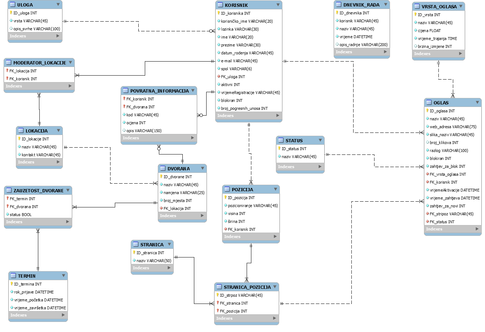
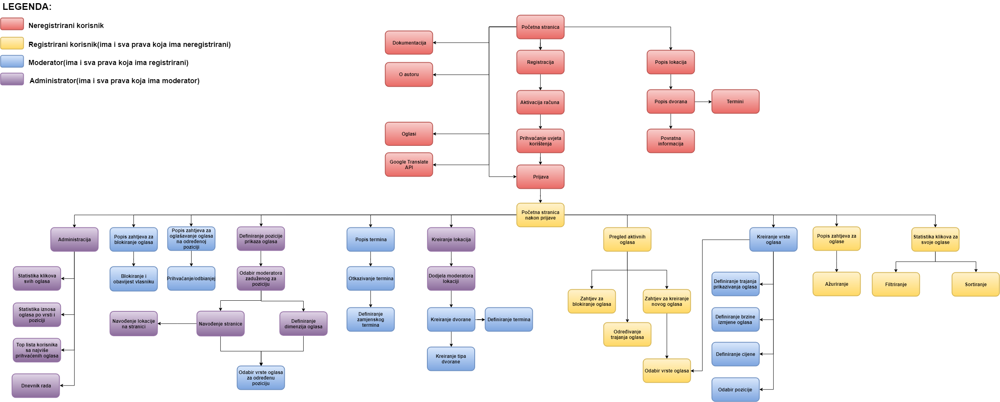

Na kolegiju Web Dizajn i Programiranje upoznali smo se sa raznim jezicima i tehnologijama Web programiranja i dizajna. Počeli smo sa osnovama, HTML-om i CSS-om te preko JavaScripta, JQueerya, JSON i Ajaxa došli do PHP-a koji je po meni najvažniji za razvoj i pravljenje Web stranica. Kroz labose, predavanja i seminare upoznali smo sa svime od navedenih te smo kroz zadaće usavršili i isprakticirali svoje znanje. U konačnici, došao je red na projekt. Moj zadatak je bio Poslovni prostor. Ukratko trebalo je kreirati stranicu koja će omogućiti rezervaciju termina u nekoj dvorani na nekoj lokaciji uz sve to prikazati razne oglase. Sve je realizirano uz pomoć MySQL baze podataka koja je dosta olakšala rad.
Projekt je realiziran uz pomoć već navedenih jezika. Najviše sam koristio PHP i MySQL u kojima je realizirana većina projekta. Još sam koristio JavaScript, JQuerry i AJAX ponajviše za prijavu i regstraciju kod provjere podataka te za brojanje klikova na oglase. Za dizajn sam koristio CSS, jedan za prijavu i registraciju te jedan za ostale stranice. Korisničke uloge i dohvat istih prilikom prijave realizirao sam pomoću sesija te sam za svaku ulogu koja je superiorna u odnosu na drugu jednostavno uključio sadržaj uloge ispod u ulogu iznad. Nisam koristio nikakva tuđa rješenja ili gotove kodove, sve sam napravio sam.
ERA model metoda konceptualnog i fizičkog modeliranja podataka koja se u projektima koristi da bi po logičkim konceptima i kreacijama olakšala posao korisniku. Ja sam eru koristio da bi pravilno povezao podatke u bazi odakleih je kasnije bilo jednostavno dohvatiti. ERA se sastoji od tablica, atributa te veza među tablicama. Moja era se sastoji od petnaest tablica od kojih su četiri nastale kao plod veze više više između dvije tablice. Tablica dnevnik rada nije povezana ni s jednom drugom jer se u nju zapisuju podaci o cjelokupnom radu sustava, a korisnika u istoj sam dohvaćao preko sesije. Primjer veze, objašnjenje - lokacija - dvorana. Na jednoj lokaciji može biti više dvorana, ali jedna jedna jedinstvena dvorana može biti na samo jednoj lokaciji. To bi bio primjer veze u tablicama. Ispod je slika ERA modela koja se može uvećati klikom na istu.
Navigacijski dijagram je dijagram koji nam olakšava razumijevanje projekta i podjelu po ulogama. U mom projektu koristio sam ga da bi definirao što koji korisnik na stranici može raditi što mi je kasnije olakšalo programiranje. Svaki korisnik koji je superioran u odnosu na drugog vidi sve što i on. Dakle, registrirani korisnik vidi što i neregistrirani, moderator vidi što i registrirani i neregistrirani te administrator vidi sve što i neregistrirani, registrirani i moderator. Ispod je slika mog navigacijskog dijagrama koja se može uvećati klikom na istu.

U nastavku ću navesti sve stranice koje sam kreirao prilikom ovog projekta koristeći NetBeans:
css - folder za dizajn
mmacinkov.css - stranica koju sam koristio za dizajnirati prijavu i registraciju
mmacinkov2.css - stranica koju sam koristio za dizajnirati ostale stranice
js - folder za JS
mmacinkov.js - stranica koju sam koristio za razne provjere autentikacije prilikom prijave i registracije
mmacinkov_jquerry.js - stranica koju sam koristio za razne provjere autentikacije prilikom prijave i registracije
multimedija - folder sa slikama
administrator.php - stranica koja omogućuje pristup samo administratorima, sadrži sve ono što pojedini administrator može raditi, a vidi se u navigacijskom dijagramu
aktivacijaEmaila.php - stranica koja služi za aktivaciju emaila, nakon što se korisnik registrira, šalje mu se email da potvrdi svoj račun klikom na link nakon čega se može prijavati
baza.class.php - stranica koja omogućuje razmjenu podataka s bazom, na svaku stranicu se ukljući uz pomoć require naredbe
brojacKlikova.php - stranica koja se koristi prilikom brojanja klikova na oglas, realizirana uz pomoć AJAX-a na njoj se uz pomoć GET metode dohvaća ID oglasa koji je kliknut te uvećava broj klikova
dokumentacija.html - stranica koja prikazuje sve korišteno u ovom projektu
izlistajDvorane.php - stranica koja omogućuje izlistavanje dvorana svake pojedine lokacije nakon klika na naziv određene lokacije
izlistajPovratneInformacije.php - stranica koja omogućuje izlistavanje svih povratnih informacija za svaku pojedinu dvoranu nakon klika na određenu dvoranu
moderator.php - stranica koja omogućuje pristup samo moderatorima, sadrži sve ono što pojedini moderator može raditi, a vidi se u navigacijskom dijagramu
neregistriraniKorisnik.php - stranica koja omogućuje pristup samo neregistrirani korisnicima, sadrži sve ono što neregistrirani korisnik može raditi, a vidi se u navigacijskom dijagramu
o_autoru.html - stranica koja prikazuje pojedinosti o meni, autoru ove stranice
odjava.php - stranica koja određuje što se događa kada se korisnik odjavi odnosno brisanje sesije
pocetna.php - stranica koja služi za preusmjeravanje korisnika dohvatom uloge svakog
prijava.php - stranica koja omogućuje korisniku koji je aktivan prijavu u sustav unošenjem korisničkog imena i lozinke
provjeraKorime.php - stranica koja služi za provjeru postoji li određeno korisničko ime u bazi prilikom registracije, realizirana uz pomoć AJAX-a
registracija.php - stranica koja omogućuje registraciju korisnika u sustav unošenjem osobnih podataka
registriraniKorisnik.php - stranica koja omogućuje pristup samo registrirani korisnicima, sadrži sve ono što registrirani korisnik može raditi, a vidi se u navigacijskom dijagramu
zaboraviliSteLozinku.php - stranica koja omogućuje korisniku slanje nove lozinke ako je staru zaboravio, jednostavnim unošenjem maila na koji će dobiti istu
FileZilla - besplatni softver, cross-platforma FTP aplikacija, koja se sastoji od FileZilla Client i FileZilla Server. Binarni programi klijenta dostupni su za Windows, Linux i MacOS, a binarni programi poslužitelja dostupni su samo za Windowse. Klijent podržava FTP, SFTP i FTPS (FTP preko SSL/TLS).
NetBeans IDE 8.2 - razvoj okruženje IDE za Javu. Služi za razvijanje raznih programa, a kompatibilan je sa većinom programskih jezika koji su potrebni za razvoj i kreiranje aplikacije: PHP, C, C++, HTML5, Javadoc i Javascript. Podržavaju ga Microsoft Windows, macOS, Linux i Solaris.
PHPMYAdmin - besplatan open source alat za administraciju i korištenje MySQL baze podataka prilikom kreiranja aplikacija za korištenje u istoj. Ova prenosiva web aplikacija pisana je prvenstveno u PHP-u, a s vremenom postala je jedan od najpopularnijih MySQL alata za administraciju, posebno za web hosting usluge.
PuTTy - besplatni open-source emulator terminala, serijska konzola i aplikacija za prijenos mrežnih datoteka koja se koristi ponajviše za određivanje vidljivosti podataka, pisanje u određene foldere i slično. Podržava nekoliko mrežnih protokola, uključujući SCP, SSH, Telnet, rlogin, i osnovnu socket vezu.
MySQLWorkbench - koristio sam ga za izradu ERA modela. vizualni alat za dizajn baze podataka koji integrira SQL razvoj, administraciju, dizajn baze, stvaranje i održavanje u jedinstveno integrirano razvojno okruženje za MySQL bazu podataka. Naslijedio je DBDesigner 4 iz fabFORCE.net, i zamjenjuje prethodni paket softvera, MySQL GUI Tools Bundle.
Google API - skup API sučelja za programiranje koji omogućuju komunikaciju s Google uslugama i njihovu integraciju na druge usluge. Primjeri ovih uključuju Pretraživanje, Gmail, Prijevod ili Google karte. Aplikacije trećih strana mogu upotrebljavati ove API-jeve kako bi iskoristile ili proširile funkcionalnost postojećih usluga. API-ji pružaju funkcije kao što su analitika, strojno učenje kao usluga (API predviđanja) ili pristup korisničkim podacima (kada se daje dopuštenje za čitanje podataka). U svom projektu sam ga koristio za prevođenje stranica i kreiranje reCaptcha.